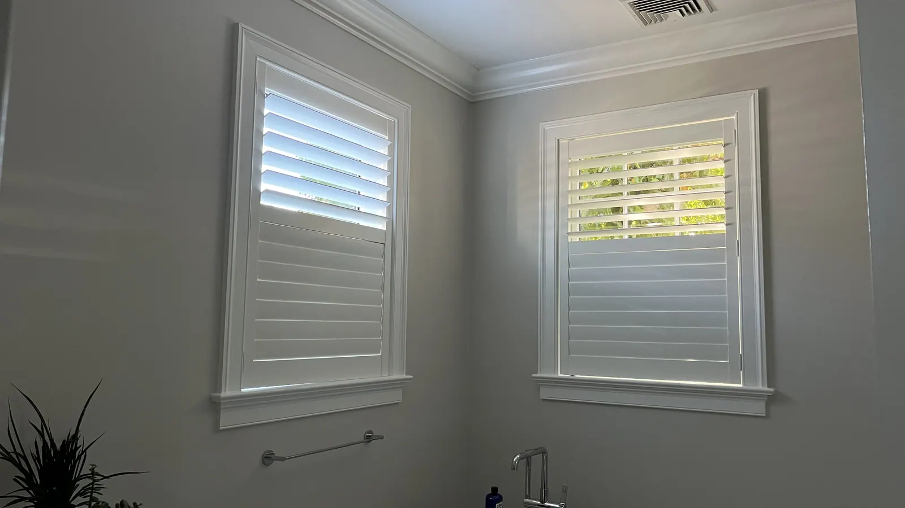
Our specialty
Custom shutters, measured and fitted by our own team
Shutters are our specialty. A shutter is built for one window and no other, so the measure is everything.
Shutters are our specialty.
A shutter is built for one window and no other, so the measure is everything. We fit shutters to arched tops, bay windows, French doors, and the out-of-square openings that older Connecticut homes are full of.
The privacy you need, the craftsmanship you deserve. Our selection of shutters are available in long-lasting materials and elevated finishes, and can be made to fit a variety of windows, including specialty shapes and sliding-glass doors.
- Hardwood, composite and vinyl, painted or stained to match your trim
- Louver sizes, frame styles and hidden tilt options
- Measured and installed by our own team
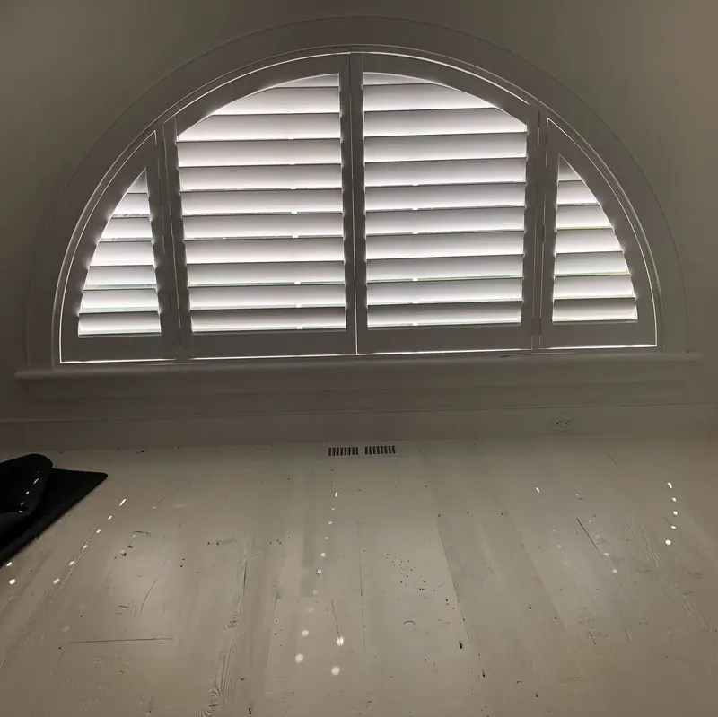
Three shutter lines from Hunter Douglas
Real hardwood, a moisture-proof Polysatin™ shutter, and a wood-and-composite hybrid. We will tell you honestly which suits each room.
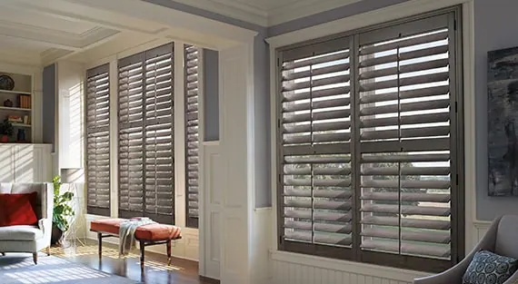
Heritance® hardwood shutters
Invest in a timeless classic with our Heritance® Hardwood Shutters. These shutters are crafted from high-quality, genuine hardwood and are available in unlimited color…
Explore Heritance® hardwood shutters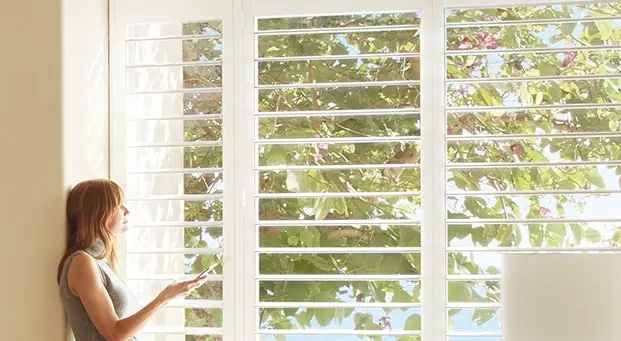
Palm Beach™ Polysatin™ shutters
Create a beachy ambiance with Palm Beach™ Polysatin™ Shutters, made with our innovative Polysatin™ material that is UV-resistant and prevents warping, cracking, fading…
Explore Palm Beach™ Polysatin™ shutters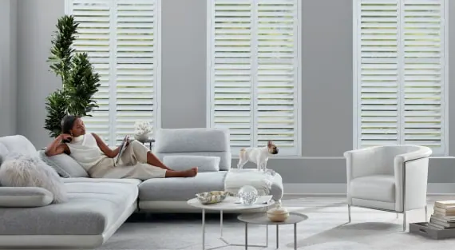
NewStyle® hybrid shutters
The rich look of wood meets strength and durability with our NewStyle® Hybrid Shutters, which are perfect for high-energy family households where enthusiastic play and…
Explore NewStyle® hybrid shutters
Shutters we have installed
Every photo here is a job we measured and installed ourselves.
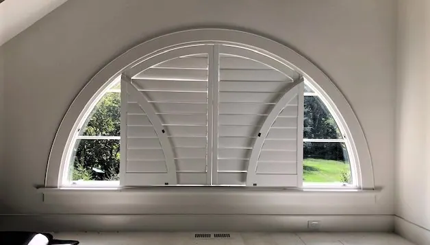
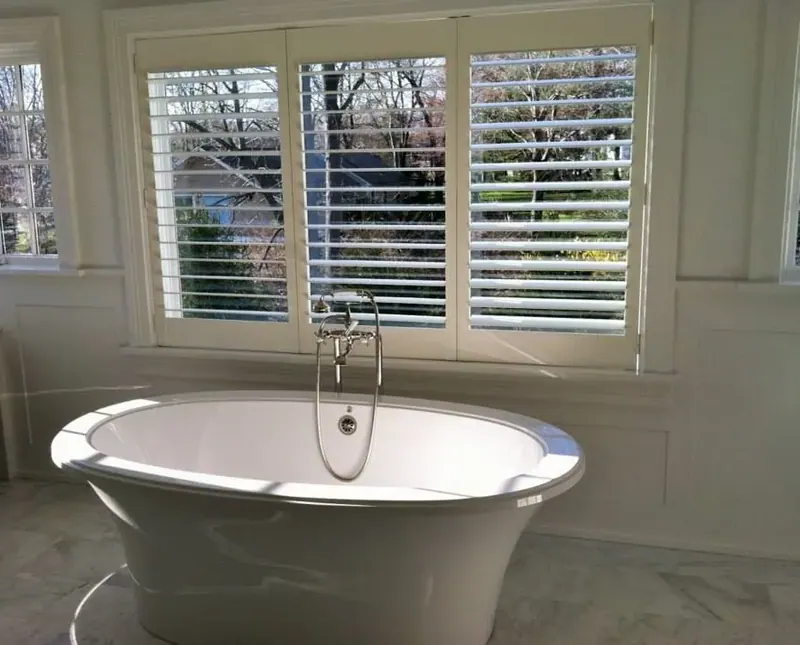
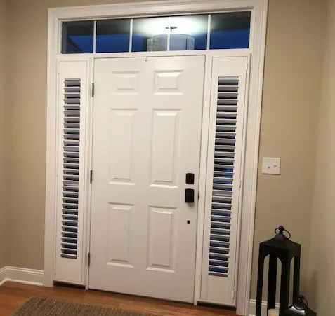
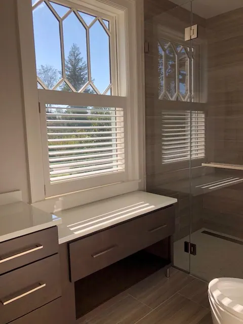
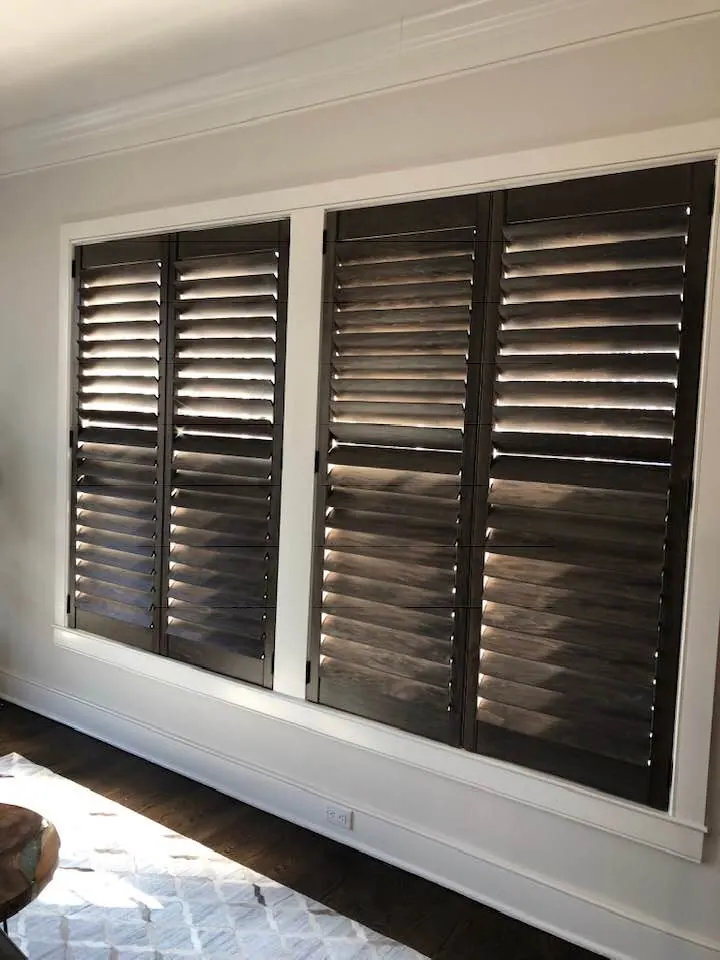
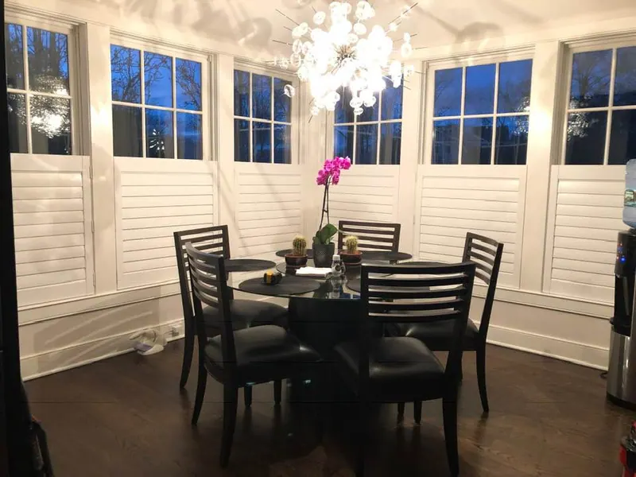
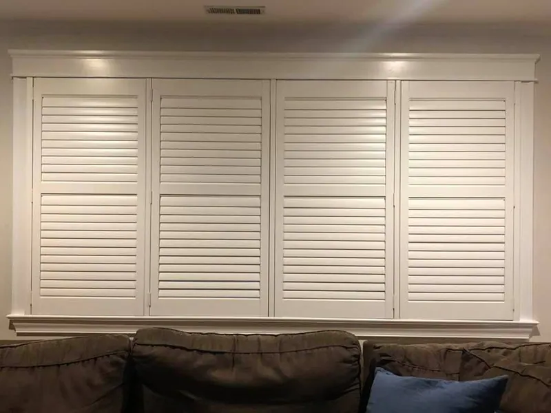
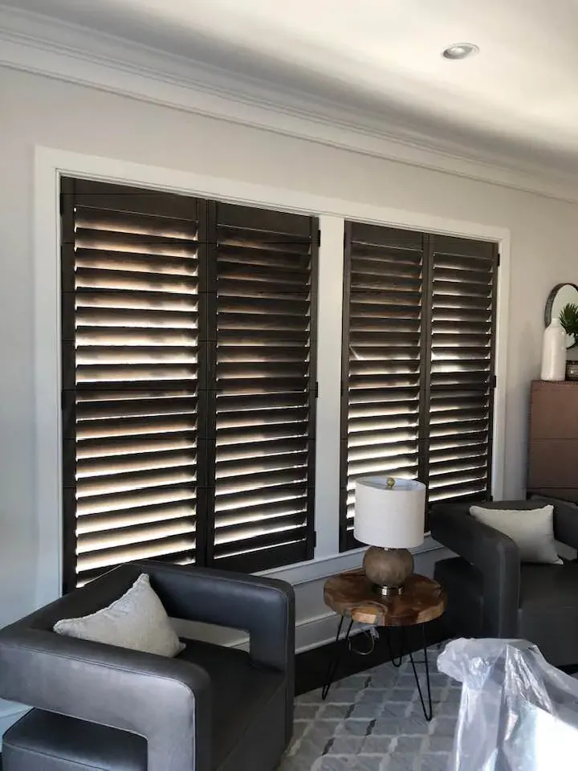
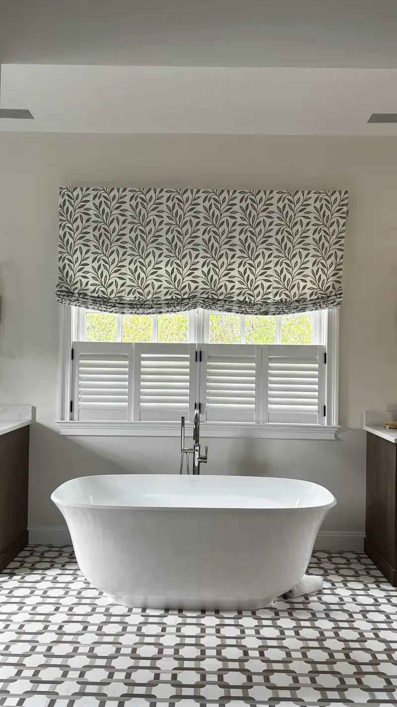
From first visit to final fit
One local team from the first visit to the last bracket.
Consultation
We visit at a time that suits you, with samples, and talk through light, privacy and style room by room.
Measure and quote
We measure every window and give you a clear written quote.
Order
We order everything and track it, so you don't have to.
Install
Our installers fit, adjust and clean up, and show you how everything works.
From homeowners we’ve worked with
Had a great experience with Custom Windows & Upholstery. They were extremely knowledgeable and helpful throughout the whole process. The measuring was spot on, the installation was clean and professional, and the shades came out great, as you can see in the photo. Everything fits perfectly and looks exactly how we wanted. Highly recommend them for anyone looking for quality window treatments and knowledgeable, professional service.
I have used this company 3 times… The workers are very polite & well trained for their roles. They called before they came to confirm the time they will be at my house. The owner Janis is very helpful and an "angel". The prices are very reasonable.
Had such a great experience with Custom Windows! Everyone was so helpful and welcoming. Isaac was especially sweet and helpful and made the experience even better. Highly recommend!
Questions we hear often
Which shutter material is right for my home?
Heritance® shutters are made from rapidly renewable, 100% genuine basswood or poplar hardwood. Palm Beach™ Polysatin™ shutters are guaranteed never to warp, crack, fade, chip, peel or discolor, which makes them a strong choice for bathrooms, kitchens and sunny rooms. NewStyle® hybrid shutters pair the rich look of wood with strength and durability. We bring samples of all three to your home.
Can you fit shutters to arched, bay and odd-shaped windows?
Yes. We fit shutters to arched tops, bay windows, French doors and the out-of-square openings that older Connecticut homes are full of. Every shutter is built for one window, so we measure each opening ourselves.
Can shutters be painted or stained to match my trim?
Yes. Shutters come in hardwood, composite and vinyl, painted or stained to match your trim, with a choice of louver sizes, frame styles and hidden tilt options.
Do you measure and install shutters?
Yes. We take care of measuring and installation. Our experienced installers are fully trained and will ensure a perfect fit for your new shutters, and they show you how everything works before they leave.
Let’s measure your windows for shutters.
A free visit, real samples, and an honest recommendation on which shutter line suits each room.